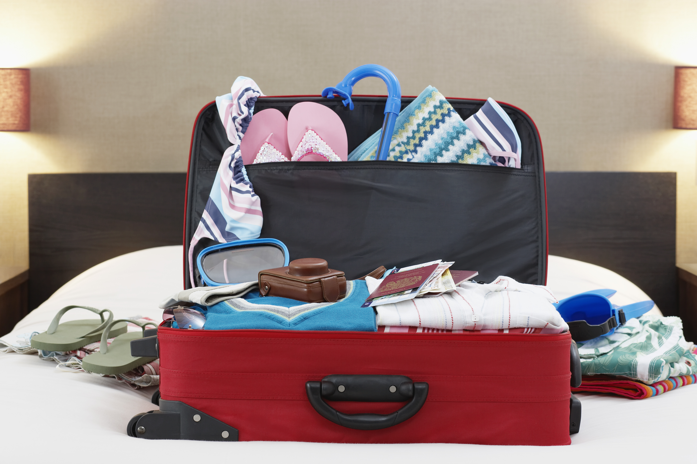

Сбор багажа

Собирайте вещи по принципу "меньше, но лучше".
Используйте технику сворачивания одежды, берите универсальные предметы гардероба и
не забывайте об аптечке.
Что обязательно взять:
- Аптечка с базовыми медикаментами
- Универсальный адаптер для розеток
- Влажные салфетки и антисептик
- Копии документов
- Портативный power bank
Безопасность в путешествии
Изучите местные законы и обычаи, сохраняйте бдительность в туристических местах,
храните ценности в надёжных местах и избегайте непроверенных такси.
Правила безопасности:
- Изучите экстренные номера
- Сохраняйте контакты посольства
- Избегайте демонстрации ценностей
- Следите за прогнозом погоды